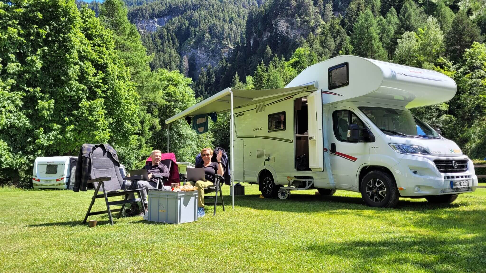
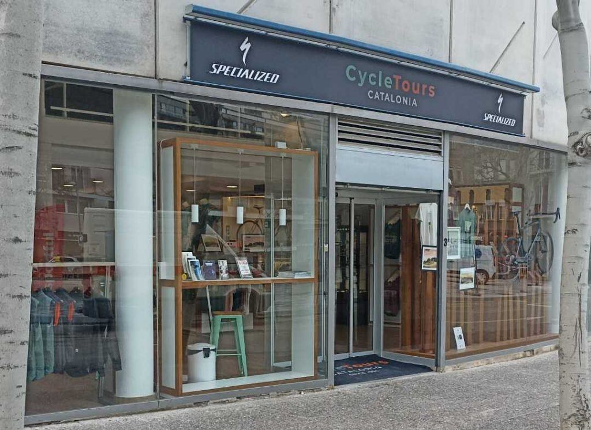
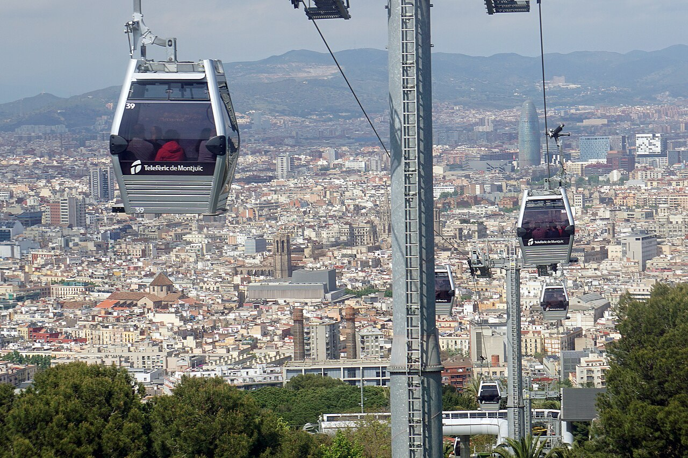

Reservas
Voo · Royal Air Maroc
GRU ↔ BCN · via Casablanca
03/07 ida · 14/07 volta · Reserva ECXMLN

Hostel Barcelona · 03–06/07 · Reserva A
Sant Jordi Sagrada Família
Freser 5, Sant Martí · 4 hóspedes

Hotel Barcelona · 03–06/07 · Reserva B
ByPillow House
Rubió i Ors 3, Horta-Guinardó · 4 hóspedes

Hotel Barcelona · 13–14/07 · Noite pré-voo
B&B Hotel Barcelona Viladecans
Olof Palme 24, Viladecans · 7 pessoas · 3 quartos

Motorhome · McRent Gavà
2 × Family Standard
Retirada 06/07 12h15 · Devolução 13/07 10h · McRent Gavà

Aluguel de Bikes · Loja 1 · 5 bikes
Velodrom Girona
Pujada de Sant Domènec 6 · Marcio, Felipe, Adriano, Iago, Lucas

Aluguel de Bikes · Loja 2 · 3 bikes
CycleTours Catalonia
Carrer de Santa Eugènia 11 · Pedro Turrini, Fabio, Ricardo

Transporte Barcelona · Hola BCN 48h
Hola Barcelona Travel Card · 48h
€18,70/pessoa (com 10% off online) · cobre dias 04 e 05/07 + chegada aeroporto
Campings & Pernoites Motorhome
Girona · 1ª noite (06→07/07)
Parking Vayreda Autocaravanas · Plano A
⭐ 3,9 · Pasaje Massaguer · 37 vagas · 3 alternativas listadas
Lourdes · 2 noites (07→08 e 09→10/07)
Camping Plein Soleil ★★ · Plano A
⭐ 4,7 · Av. du Monge · piscina · sanitários novos · 5 alternativas listadas
Tourmalet · 1 noite (08→09/07)
La Mongie — Place d’Arizes (véspera da Etapa 6)
Parking P3-P4, rampa leste · oficialmente recomendado em dias do Tour
Campan · 1 noite (10→11/07)
Camping Municipal de Campan · Plano A
122 vagas · Euro-relais · ⭐ 3,8 · 4 alternativas listadas
Luchon · 1 noite (11→12/07)
Camping Pradelongue ★★★★ · Plano A
⭐ 4,5 · Moustajon · piscina aquecida · 3 alternativas listadas
Girona · última noite (12→13/07)
Parking Vayreda Autocaravanas
Mesmo da 1ª noite · devolução das bikes + jantar de encerramento
Voos & Salas VIP
Salas VIP disponíveis na rota
Acesso via Visa Infinite, Mastercard Black e Itaú Personnalité — programas Priority Pass, LoungeKey, DragonPass e Visa Airport Companion. Conferir nos apps antes de cada uso — quantidade de acessos varia por emissor.
Roteiro Dia a Dia
| 19h10 | Pouso em Barcelona (GRU → BCN) |
| 20h00 | Desembarque + bagagens |
| 20h30 | 2 Ubers/Cabify XL do aeroporto aos hotéis — mais prático que metrô com bagagem (~€35-50 total por carro) |
| ~21h15 | Chegada nos dois hotéis: ByPillow House (Rubió i Ors, Horta-Guinardó) e Sant Jordi Sagrada Família (Freser) |
| ~21h45 | Check-in nos dois hotéis |
| 22h30 | Jantar próximo aos hotéis |

• 13h30: Circuito TOTALMENTE FECHADO ao trânsito (com barreiras físicas em todo o trajeto)
• 16h-19h30: Faixa de MAIOR restrição (caravana publicitária + corrida)
• 17h05: Largada oficial (primeira equipe). Largadas escalonadas a cada 5 min
• ~17h10: 1ª equipe deve cruzar a linha de chegada em Montjuïc
• ~19h15: Última equipe chega (algumas mais tarde)
• 20h30: Trânsito volta progressivamente
• Multidão esperada: 650.000 a 850.000 pessoas em Barcelona neste dia
• Ônibus 150 (que sobe Montjuïc) ESTÁ SUSPENSO entre 16h-19h30. Metrô + Funicular de Montjuïc são as opções viáveis.
| 08h00 | Café da manhã no hostel |
| 09h00 | Saída a pé do hostel — passeio turístico pelo centro de Barcelona |
| ↳ Sagrada Família → Casa Milà → Casa Batlló → Plaça Catalunya (parada na Official Store do Tour de France para compras) → Catedral de Barcelona → bairro Gòtic → La Boqueria → Palácio Güell → Rambla de Mar | |
| ~12h30 | Almoço na Barceloneta (último momento “tranquilo” antes da multidão se concentrar) |
| ~13h45 | Opcional (ver largada): Metrô L4 amarela direto de Barceloneta até El Maresme | Fòrum (~15 min) — visitar a Vila do Tour no Parc del Fòrum (zona de fãs, palco, atividades, equipes treinando) |
| ~14h30 | Continuar pela orla até voltar a Barceloneta, ou ir direto pra Montjuïc |
| ~14h45 | Metrô até Paral·lel: de Barceloneta L4 → Verdaguer → L5 → Diagonal → L3 verde → Paral·lel (~20 min · serviço reforçado 40% nesse dia) |
| ~15h05 | Funicular de Montjuïc ⭐ — sobe direto de Paral·lel até Av. Miramar/Parc de Montjuïc. Funciona com o mesmo bilhete da Hola BCN, sem fila extra |
| ~15h10 | Chegada em Parc de Montjuïc (parte alta) — caminhada descendo pelos Jardins até o Estadi (~15-20 min, vistas espetaculares) |
| ~15h30 | Posicionados na área do Estadi Olímpic Lluís Companys — 1h30-2h de antecedência pra escolher bom lugar (multidão massiva esperada) |
| 17h05 | 1ª equipe larga no Fòrum — telões transmitem a corrida em tempo real |
| ~17h10 | 1ª equipe chega em Montjuïc — chegadas escalonadas a cada 5 min |
| ~19h15 | Última equipe cruza a linha · Premiação · primeiro yellow jersey |
| ~19h45 | Descida de Montjuïc · Opções: (1) caminhar até Pl. Espanya (~20 min), (2) voltar pelo Funicular → Paral·lel, ou (3) Metrô L3 em Espanya |
| ~20h30 | Chegada ao Passeig de Sant Joan — jantar (a região é famosa pelos bares e restaurantes ao longo da alameda arborizada) |
| ~22h30 | Volta a pé ao hostel — ~20 min de caminhada por Sant Martí |
🚇 Mais info útil de transporte no dia: A TMB reforça serviço em 40% nas linhas L1 e L5. As estações de metrô viram pontos oficiais de travessia do circuito (vão ter funcionários de apoio). Plano B caso o Funicular esteja com problema: Metrô L1/L3 até Espanya e subir a pé pelas escadarias do MNAC e depois pelos jardins de Joan Brossa até o Estadi (~25 min subindo). Bus 150 só volta após 19h30, então não é opção pra subir.
🚧 Áreas oficiais de travessia do circuito: 54 pontos de passagem para pedestres distribuídos ao longo de toda a rota, máximo de 5 min a pé entre eles. Travessia elevada em Carrer de Mallorca e Avenue de l’Estadi.

Largada: 13h05 em Tarragona · Caravana publicitária chega Barcelona: ~15h25 (~2h antes do pelotão) · Pelotão entra Barcelona: ~16h26 · Chegada estimada: ~17h35 em Montjuïc
• 12h00: Início das restrições
• 13h30: Circuito TOTALMENTE FECHADO ao trânsito (com barreiras físicas)
• 15h45-17h45: Fase crítica — Montjuïc “praticamente isolada”, cruzamentos com checkpoint controlado
• ~16h26: Pelotão entra Barcelona via Collblanc
• ~17h35: Chegada do pelotão no Estadi Olímpic
• 18h00: Trânsito volta progressivamente
• Ônibus 150 e linhas que servem Montjuïc SUSPENSAS durante toda a passagem dos ciclistas
• Travessia elevada Av. de l’Estadi (do dia anterior) mantida · escadarias da Av. Reina Maria Cristina servem como travessia
• Estações de metrô viram pontos oficiais de travessia · TMB reforça serviço em 40% nas L1 e L5
| 08h00 | Café da manhã no hostel |
| 09h00 | Saída do hostel rumo ao Park Güell — 2 carros de aplicativo (Uber/Cabify/FreeNow, ~€15-20 total ÷ 8) levam direto à entrada em ~15 min. Alternativa de metrô: L4 → L3 até Vallcarca + 10 min de subida a pé |
| ~09h20 | Chegada ao Park Güell · Carrer d’Olot, Gràcia · Volta pelo parque, vista panorâmica, mosaicos de Gaudí · Importante: comprar bilhete online com antecedência (zona monumental) |
| ~11h00 | Bus V19 (ou 196) da região do Park Güell até a região do Tibidabo · ~25-30 min · descer próximo a Av. Tibidabo |
| ~11h30 | Chegada à Plaça del Doctor Andreu / Mirablau · Vista linda da cidade do mirante antes de subir |
| ~11h45 | Funicular Cuca de Llum até o topo do Tibidabo · €7,70 ida-e-volta · 4 min de subida, 272 m de desnível |
| ~12h00 | Topo do Tibidabo — Templo do Sagrat Cor (mirante no terraço), vista 360° da cidade, parque de diversões vintage |
| ~13h00 | Almoço no topo (restaurante do Sagrat Cor) — encerrar até 13h45 pra não atrasar |
| ~13h45 | Descer de funicular Cuca de Llum até Plaça del Doctor Andreu |
| ~14h00 | Bus 196 descendo Av. Tibidabo até FGC Av. Tibidabo (5 min) — ou caminhar (~12 min) |
| ~14h15 | FGC L7 (Av. Tibidabo → Plaça Catalunya) — 7 estações, ~12 min |
| ~14h30 | Chegada em Pl. Catalunya · baldeação interna pra Metrô L3 verde (~5 min de caminhada) |
| ~14h40 | Metrô L3 sentido Zona Universitària: Catalunya → Liceu → Drassanes → Paral·lel (4 estações, ~7 min) |
| ~14h50 | Caminhada interna em Paral·lel até a plataforma do Funicular de Montjuïc (~3 min · sinalizado) |
| ~14h55 | Funicular de Montjuïc ⭐ — mesma estratégia do dia 04 · sobe direto até Av. Miramar/Parc de Montjuïc em 2 min · coberto pela Hola BCN |
| ~15h00 | Chegada em Parc de Montjuïc (parte alta) — caminhada descendo pelos Jardins até o circuito (~15-20 min · vistas espetaculares) |
| ~15h20 | Posicionados no circuito — escolher entre rampa do Castell (mais cinematográfico, 13%) ou perto do Estadi Olímpic (ver chegada) · ANTES das 15h45 quando Montjuïc fica “praticamente isolada” |
| ~16h26 | Pelotão entra Barcelona via Collblanc — telões transmitem em tempo real |
| ~16h45 | Pelotão entra no circuito de Montjuïc — 1ª passagem · grupo ainda compacto |
| ~17h15 | Pelotão na 2ª passagem (penúltima) · ataques começam, especialmente na rampa do Castell (1,6 km a 9,3%) |
| ~17h35 | Chegada — Passeig Olímpic, Estadi Lluís Companys · 2ª camisa amarela em jogo · Premiação |
| ~18h30 | Descida de Montjuïc · Opções: (1) caminhar até Pl. Espanya (~20 min, bus 150 retomado após 18h), (2) voltar pelo Funicular de Montjuïc → Paral·lel, ou (3) escadarias da Av. Reina Maria Cristina |
| ~19h30 | Chegada ao Passeig de Sant Joan — jantar na alameda arborizada (cheia de bares e restaurantes) |
| ~22h30 | Volta a pé ao hostel — ~20 min por Sant Martí |
⚠️ Janela apertada com a fase crítica: Montjuïc fica “praticamente isolada” entre 15h45-17h45. Vocês precisam estar posicionados no circuito até 15h45. Chegando ~15h20 no ponto escolhido, têm ~25 min de margem antes do bloqueio. Se atrasarem o almoço no Tibidabo, podem ficar do lado errado do circuito.
📍 Onde se posicionar: a rampa do Castell (1,6 km a 9,3%, com seção a 13%) é o ponto mais cinematográfico — vocês veem os ataques dos GC contenders 3 vezes. Como alternativa, perto da linha de chegada no Estadi tem a explosão final. Os dois ficam na “parte alta” de Montjuïc, perto de onde o Funicular descarrega. Levar protetor solar, água e algo pra comer (impossível sair pra comprar depois das 15h45).
🎫 Bilhete de transporte: a mesma Hola BCN Travel Card 48h ativada no sábado de manhã cobre todo o domingo (TMB, Funicular de Montjuïc, FGC do Tibidabo). O funicular do Tibidabo (Cuca de Llum, €7,70) e o Teleférico de Montjuïc são à parte.
| 07h00 | Café da manhã nos hotéis · arrumar malas |
| 08h00 | Check-out dos dois hotéis · solicitar guarda-volumes pra deixar as malas (prática comum em hostels, mas confirmar na chegada) |
| ~08h15 | Deslocamento à Decathlon Gràcia (Carrer Gran de Gràcia, 54) · do hostel Sant Jordi: 20 min a pé OU metrô L5 (Sagrada Família → Diagonal, 4 paradas) + 8 min a pé · do ByPillow: ~25 min de metrô |
| 09h00 | Decathlon Gràcia abre · compras rápidas (caramanhola, óculos, meias, itens que esqueceram, etc.) |
| ~10h15 | Voltar aos hotéis · pegar as malas |
| ~10h45 | 2 Ubers/Cabify XL dos hotéis à McRent Gavà (Carrer de la Forja, 13) — ~25-30 min |
| ~11h30 | Chegada à McRent Gavà |
| 12h15 | Retirada dos 2 motorhomes — McRent Gavà (Carrer de la Forja, 13) |
| 13h15 | Saída para Girona (~1h30, 114 km) |
| ~14h45 | Chegada em Girona — seguir direto para as lojas (não ao camping ainda) |
| ~15h15 | CycleTours Catalonia — retirar as 3 bikes (Carrer de Santa Eugènia, 11) |
| ~16h00 | Velodrom Girona — retirar as 5 bikes + resolver o crédito da GALFER na loja/café (Pujada de Sant Domènec, fecha 20h30) |
| ~17h30 | Compras de roupa e equipamento — centro histórico (Twenty One, Rocacorba) e/ou Biking Point. Ver seção 06 com o mapa das lojas |
| ~19h30 | Seguir ao Camper Area Vayreda — estacionar e organizar os motorhomes para a 1ª noite |
| 21h00 | Jantar em Girona |
Decathlon Gràcia: Carrer Gran de Gràcia, 54 · ⭐ 4,2 (5.219 avals) · 1,58 km da Sagrada Família · abre 9h segunda · Tel +34 936 61 87 93. Compras rápidas só (items esquecidos / equipamento de última hora).
Trajeto à McRent Gavà: 2 Ubers/Cabify XL dos hotéis à McRent Gavà (~25-30 min, €35-50 cada). Fica em Gavà, não dentro do aeroporto — não confundir. Endereço exato: Carrer de la Forja, 13, 08850 Gavà.

| 06h30 | Acordar, café rápido — todas as 8 bikes já em mãos desde ontem |
| 08h00 | Largada do pedal |
| ~12h00 | Retorno a Girona |
| 12h30 | Almoço no centro |
| ~14h00 | Tarde livre em Girona — bater perna, visitar mais lojas de ciclismo (ver seção 06) |
| 15h30 | Banho e guardar as bikes nos motorhomes |
| 16h30 | Saída dos motorhomes para Lourdes (~4h54, 465 km) |
| ~21h30 | Chegada em Lourdes — Camping em Lourdes (ver lista de alternativas na seção 02) |
| ~22h00 | Jantar em Lourdes |

| 06h30 | Acordar, café da manhã |
| 07h30 | Saída de Lourdes de bike |
| ~11h00 | Retorno a Lourdes |
| 11h30 | Banho rápido, almoço leve, guardar bikes |
| 12h30 | Saída dos motorhomes para Pau (~45 min) |
| 13h30 | Chegada em Pau — posicionar na Place de Verdun |
| 14h15 | Largada oficial da Etapa 5 em Lannemezan |
| 16h15 | Caravana publicitária chega em Pau |
| 17h37–55 | Chegada do pelotão — Place de Verdun (sprint) |
| ~18h15 | Saída direto de Pau para o Tourmalet (até Place d’Arizes em La Mongie, na rampa leste, 1h28 · 85 km) |
| ~19h45 | Chegada a La Mongie — estacionar no Place d’Arizes / Parking P3-P4 (a ~5 km do cume) enquanto a estrada está aberta |
| ~20h00 | Jantar no motorhome · pernoite já posicionados pra etapa de amanhã |
Confirmar próximo à data: horário de fechamento da estrada do Tourmalet no dia 08 — ligar pro turismo de Barèges-Tourmalet (+33 5 62 92 16 00). Cols grandes às vezes fecham na tarde da véspera.

• 6h00: Estradas do Tourmalet TOTALMENTE FECHADAS pra carros e motorhomes — só ciclistas e pedestres podem passar
• Estradas reabrem só após ~19h-19h30 · saída só pelo lado leste (Sainte-Marie-de-Campan → Bagnères-de-Bigorre → Lourdes, ~1h15)
• ~15h15: Caravana publicitária passa pelo Tourmalet (170 veículos, brindes) — depois disso multidão e caminho intransitável
• ~16h25: Pelotão passa pelo Tourmalet (chegada em Gavarnie-Gèdre ~17h20)
• 86ª passagem do Tourmalet na história do TDF · etapa rainha dos Pirineus
| 06h00 | Estradas fecham · café da manhã no motorhome em La Mongie (Place d’Arizes) |
| ~07h00 | Pedalar Tourmalet · subida lado leste 4 km até o topo (2.115 m) · descida lado oeste 17 km até Luz-Saint-Sauveur · volta subindo lado oeste (17 km a 7,3% — a subida famosa) · descida 4 km até La Mongie |
| ~11h00 | Volta ao motorhome · banho/troca |
| ~12h00 | Almoço no motorhome (ou nos restaurantes de La Mongie centro) |
| ~14h00 | Subir a pé pela estrada até o ponto escolhido · objetivo: últimos 2 km antes do topo (gradiente 9-10%, ~2.000 m altitude) · ~30-40 min de caminhada · levar agasalho, água, lanche, cadeirinha |
| ~14h45 | POSICIONADOS no ponto definitivo · escolher local com boa vista das rampas finais · aguardar passagem |
| ~15h15 | Caravana publicitária passa · 170 veículos, brindes lançados (cuidado com objetos) · depois disso, multidão se concentra e caminho fica intransitável |
| ~16h25 | PELOTÃO PASSA · momento principal do dia · pelotão atacando a rampa final do Tourmalet |
| ~17h00 | Começar caminhada de volta ao motorhome em La Mongie · ~40 min (mais devagar pela multidão descendo) |
| ~17h45 | Chegada ao motorhome · descansar enquanto a estrada reabre |
| ~19h00 | Estradas reabrem progressivamente · sair via lado leste (proibido descer pelo lado oeste, onde estará todo o fluxo da etapa) |
| ~19h15 | Saída via Sainte-Marie-de-Campan → Bagnères-de-Bigorre → Lourdes · ~60 km · 1h15 |
| ~20h30 | Chegada em Lourdes — Camping em Lourdes (ver lista de alternativas na seção 02) |
| 21h30 | Jantar em Lourdes |
🎒 Pra levar na caminhada até a rampa: agasalho (a 2.000 m tem vento mesmo em julho), 1L de água/pessoa, protetor solar, lanche pra ~3h de espera, câmera carregada, cadeirinha dobrável opcional. Não tem banheiro oficial no col — usar no motorhome antes de subir.
🚧 Saída pelo lado leste: obrigatório descer por Sainte-Marie-de-Campan. O lado oeste (Luz-Saint-Sauveur → Gavarnie) estará completamente bloqueado pela operação da etapa que finaliza em Gavarnie-Gèdre.

| 07h30 | Acordar, café da manhã |
| 08h30 | Saída de Lourdes de bike |
| ~14h00 | Retorno a Lourdes |
| 14h30 | Almoço, banho, guardar bikes nos motorhomes |
| ~16h00 | Saída dos motorhomes para Campan (~1h06, 65 km) |
| ~17h00 | Chegada — Camping Municipal de Campan · 1 noite |
| 20h00 | Jantar em Campan |

| 06h00 | Acordar |
| 08h00 | Saída de bike de Campan (Sainte-Marie) |
| 08h30 | Largada do pedal |
| ~14h00 | Retorno a Campan — almoço |
| 16h00 | Saída dos motorhomes para Camping Pradelongue (5 km a norte de Luchon, ~1h15) |
| 17h15 | Chegada ao Camping Pradelongue ★★★★ em Moustajon · sanitários novos, piscina aquecida, supermercado vizinho |
| 20h00 | Jantar |

| 05h30 | Acordar cedo |
| 07h00 | Largada do pedal saindo do Pradelongue — descer 2 km até Luchon e começar a subida do Superbagnères |
| ~12h00 | Retorno ao Camping Pradelongue — banho, guardar bikes nos motorhomes |
| 13h00 | Saída dos motorhomes para Girona (~4h38 de estrada, 428 km) |
| ~17h45 | Chegada em Girona — seguir direto às lojas devolver as bikes |
| ~17h50 | Devolução das 3 bikes — CycleTours (1ª parada, fecha 18h — chegar correndo) |
| ~18h30 | Devolução das 5 bikes — Velodrom (fecha 20h30, dá tempo) |
| ~19h15 | Estacionar no Camper Area Vayreda (mesmo da ida) — última noite |
| 21h00 | Jantar de encerramento em Girona |
| 07h15 | Acordar, café, arrumar tudo nos motorhomes |
| 08h00 | Saída de Girona para a McRent Gavà (~1h35, 120 km) — bikes já devolvidas ontem |
| ~09h30 | Chegada à McRent Gavà (Carrer de la Forja, 13) |
| até 10h00 | Devolução dos 2 motorhomes — McRent Gavà prazo apertado |
| ~10h30 | Uber da McRent Gavà ao B&B Hotel Viladecans (~10 min) |
| ~11h00 | Guardar malas no hotel (guarda-volumes) — check-in só às 14h |
| ~11h30 | Grupo se divide em dois — programação diferente por perfil (ver abaixo) |
| ~22h30 | Reencontro no hotel — check-in feito e todos juntos pra última noite antes do voo |
Check-in só às 14h — o B&B tem guarda-volumes, então dá pra deixar as malas e o grupo se divide entre praia/outlet perto do hotel e Barcelona.
| Até 12h | Check-out do B&B Hotel Viladecans |
| 13h45 | Voo BCN → GRU |
| 22h30 | Chegada em Guarulhos |
Rota dos Motorhomes
Motorhomes retirados dia 06/07 (13h) e devolvidos dia 13/07 (até 10h). Saída e retorno em Barcelona, com base em Lourdes pros primeiros dias de pedal (incluindo desvio a Pau pra Etapa 5 e a subida ao Tourmalet na véspera da Etapa 6) e Pradelongue (Luchon) pro último. Volta passando por Girona pra devolver as bikes e pernoitar antes da entrega.
Rota completa · Google Maps calcula automaticamente o trajeto entre os pontos.
↗ Abrir rota completa no Google MapsLojas de Ciclismo em Girona
Girona é uma das mecas do ciclismo de estrada — muito pro do WorldTour mora e treina aqui, e a cidade tem lojas de primeira linha. Como o motorhome chega no dia 06 à tarde e já segue direto pras lojas (retirar as bikes na CycleTours e Velodrom), dá pra aproveitar e garimpar roupa e equipamento antes de tudo fechar. As duas lojas de roupa premium ficam no centro histórico, coladas uma na outra.
Mapa interativo das lojas de ciclismo de Girona. Os pontos exatos das lojas, do Velodrom e da CycleTours estão nos cards abaixo (cada um com link direto pro Google Maps).
Lourdes — Base Principal
Lourdes é a base dos dias pedalando nos Pireneus — 2 noites em um camping local (07→08 e 09→10) com o desvio do Tourmalet no meio. Como Camping La Forêt está sem vagas (e em julho com TDF na região todos os campings são disputados), montamos uma lista de alternativas na seção 02. Aqui ficam os melhores comércios da região pra abastecer o motorhome, lavar roupa, tomar café e jantar bem — organizados por categoria, com distância aproximada do centro de Lourdes.
🛒 Supermercados
Compras grandes · 2,6 km do Camping · ⭐ 3,9
Carrefour Market Lourdes
Mercado completo · ideal pra abastecer o motorhome · seg-sáb 8h30-19h30
Abastecimento rápido · 1,6 km do Camping · ⭐ 4,1
Galeries Saint Honoré
Perto do Santuário · aberto todos os dias 8h-23h
Reposição rápida · 2,4 km do Camping · ⭐ 3,9
Carrefour City
Centro · seg-sáb 7h-22h · domingo manhã
Reposição rápida · 2,4 km do Camping · ⭐ 3,7
MONOPRIX
Centro · todos os dias 8h-20h
🧺 Lavanderias
Auto-serviço · 3,0 km do Camping · ⭐ 4,1
Lux Laverie
Self-service · todos os dias 6h-22h · vizinha do camping
Mercado + lavanderia · 2,6 km do Camping · ⭐ 3,8
Laverie Revolution Laundry
Junto ao Carrefour Market · combine compras + lavagem
Centro · 2,5 km do Camping · ⭐ 4,2
Lavomatique du Centre
Centro · todos os dias 7h-22h · máquinas modernas
☕ Cafés da manhã
Top escolha · 1,8 km do Camping · ⭐ 4,9 (87 avaliações)
Café Sainte-Marie
Perto do Santuário · todos os dias 6h30-19h · melhor café da cidade
Café + confeitaria · 2,3 km do Camping · ⭐ 4,6
La Pie Colette
Quiches, tortas, leite vegetal · seg fechado · 8h30-17h
Tradicional · 1,7 km do Camping · ⭐ 3,6
Café Royal
Bar/restaurante histórico · todos os dias 8h-2h
🍽️ Restaurantes — jantar
Regional do sudoeste · 2,2 km do Camping · ⭐ 4,9 (164 av.)
Sur la tête des Canards
Confit de canard, peito de pato · ⚠️ fecha terça e quarta
Custo-benefício · 1,9 km do Camping · ⭐ 4,3 (943 av.)
Le Bodegon
Brasserie clássica · todos os dias 9h-22h · ar-condicionado
Noite especial · 2,1 km do Camping · ⭐ 4,6
Le B – Restaurant & Bar
Sofisticado · só jantar 17h-23h30 · menu degustação
Italiana · 1,9 km do Camping · ⭐ 4,4 (1.575 av.)
Pizzeria Made in Italy
Pizza, massas, à beira do rio · seg fechado · ter-dom 7h30-1h
Asiática · 1,7 km do Camping · ⭐ 4,4 (623 av.)
Asian Delices Food
Comida filipina · todos os dias 11h30-21h · sair da rotina francesa
Chegando tarde e cansados de Girona, o ideal é aproveitar o restaurante La Bergerie dentro do próprio camping (cozinha regional) ou pedir uma das pizzas que eles fazem no forno. Sem precisar dirigir, sem sair do camping. Banho e dormir. Pela manhã, padaria do camping abre 8h30 com croissants frescos.
Café e padaria do camping pra sair pedalando cedo. Se quiser variar um dia, vale o Café Sainte-Marie (1,8 km, melhor café da cidade, abre 6h30). Lanches e barras pro pedal no mercadinho do próprio camping ou em uma parada no Carrefour City no caminho. À noite, comer no restaurante do camping ou ir ao centro pra um jantar especial — vale reservar uma noite no Sur la tête des Canards (cozinha do sudoeste, fecha terça e quarta) ou Le Bodegon (sempre aberto).
Boa noite pra reservar o Sur la tête des Canards (confit de canard regional) ou o Le B pra uma celebração mais sofisticada antes de seguir pros Pirineus de Aubisque/Soulor. Shuttle bus do camping ao centro, ou Uber/táxi se voltar tarde.